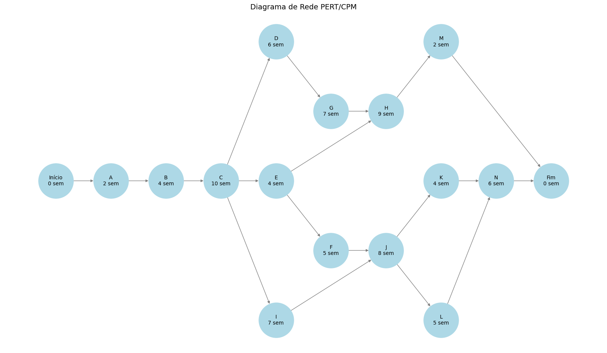
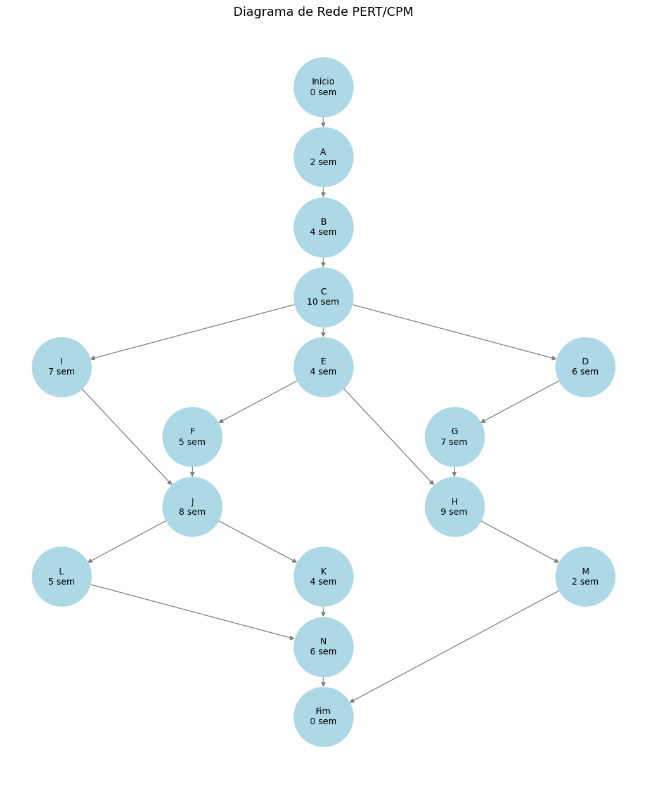

Análise de PERT/CPM#
Este notebook realiza uma análise de PERT/CPM baseada no projeto descrito, considerando as atividades, dependências e durações fornecidas.
Objetivos#
Determinar o caminho crítico.
Calcular os tempos de início e término (mais cedo e mais tarde).
Gerar gráficos para visualizar o progresso.
# Importar bibliotecas necessárias
import pandas as pd
import networkx as nx
import matplotlib.pyplot as plt
import numpy as np
Carregar Dados do Projeto#
O arquivo CSV contém as informações das atividades, dependências e durações estimadas.
# Carregar dados do CSV
data = pd.DataFrame({
'Atividade': ['A', 'B', 'C', 'D', 'E', 'F', 'G', 'H', 'I', 'J', 'K', 'L', 'M', 'N'],
'Descrição': ['Escavação', 'Fundação', 'Paredes', 'Telhado', 'Encanamento Exterior',
'Encanamento Interior', 'Muros', 'Pintura Exterior', 'Instalação Elétrica', 'Divisórias',
'Piso', 'Pintura Interior', 'Acabamento Exterior', 'Acabamento Interior'],
'Atividades Precedentes': [None, 'A', 'B', 'C', 'C', 'E', 'D', 'E,G', 'C', 'F,I', 'J', 'J', 'H', 'K,L'],
'Duração Estimada': [2, 4, 10, 6, 4, 5, 7, 9, 7, 8, 4, 5, 2, 6]
})
data
| Atividade | Descrição | Atividades Precedentes | Duração Estimada | |
|---|---|---|---|---|
| 0 | A | Escavação | None | 2 |
| 1 | B | Fundação | A | 4 |
| 2 | C | Paredes | B | 10 |
| 3 | D | Telhado | C | 6 |
| 4 | E | Encanamento Exterior | C | 4 |
| 5 | F | Encanamento Interior | E | 5 |
| 6 | G | Muros | D | 7 |
| 7 | H | Pintura Exterior | E,G | 9 |
| 8 | I | Instalação Elétrica | C | 7 |
| 9 | J | Divisórias | F,I | 8 |
| 10 | K | Piso | J | 4 |
| 11 | L | Pintura Interior | J | 5 |
| 12 | M | Acabamento Exterior | H | 2 |
| 13 | N | Acabamento Interior | K,L | 6 |
Criar o Grafo do Projeto#
A partir das dependências, construímos um grafo dirigido para representar as relações entre as atividades.
# Importar as bibliotecas necessárias
import matplotlib.pyplot as plt
import networkx as nx
import pandas as pd
# Exemplo de DataFrame
data = pd.DataFrame({
'Atividade': ['Início', 'A', 'B', 'C', 'D', 'E', 'F', 'G', 'H', 'I', 'J', 'K', 'L', 'M', 'N', 'Fim'],
'Descrição': ['Início','Escavação', 'Fundação', 'Paredes', 'Telhado', 'Encanamento Exterior',
'Encanamento Interior', 'Muros', 'Pintura Exterior', 'Instalação Elétrica', 'Divisórias',
'Piso', 'Pintura Interior', 'Acabamento Exterior', 'Acabamento Interior', 'Fim'],
'Atividades Precedentes': [None, 'Início', 'A', 'B', 'C', 'C', 'E', 'D', 'E,G', 'C', 'F,I', 'J', 'J', 'H', 'K,L', 'M,N'],
'Duração Estimada': [0, 2, 4, 10, 6, 4, 5, 7, 9, 7, 8, 4, 5, 2, 6, 0]
})
# Criar o grafo de PERT/CPM
G = nx.DiGraph()
# Adicionar nós e arestas ao grafo
for i, row in data.iterrows():
G.add_node(row['Atividade'], duração=row['Duração Estimada'])
if row['Atividades Precedentes']:
precedentes = row['Atividades Precedentes'].split(',')
for p in precedentes:
G.add_edge(p.strip(), row['Atividade'])
# Função para calcular os níveis das atividades (hierarquia top-down)
def calculate_levels(graph):
levels = {}
for node in nx.topological_sort(graph): # Garante ordem topológica
if len(list(graph.predecessors(node))) == 0:
levels[node] = 0
else:
levels[node] = max([levels[p] for p in graph.predecessors(node)]) + 1
return levels
# Calcular os níveis das atividades
levels = calculate_levels(G)
# Atribuir os níveis como atributos aos nós
nx.set_node_attributes(G, levels, "subset")
# Calcular o layout dos nós com espaçamento ajustado
pos = nx.multipartite_layout(G, subset_key="subset")
vertical_spacing = 2.0 # Ajuste do espaçamento vertical
for node in pos:
x, y = pos[node]
pos[node] = (x, y * vertical_spacing)
# Melhorar a visualização do grafo
plt.figure(figsize=(16, 9))
# Desenhar o grafo
nx.draw(
G,
pos,
with_labels=False, # Desativa os rótulos padrão
node_size=4500, # Ajusta o tamanho dos nós
node_color='lightblue',
edge_color='gray',
arrowsize=10
)
# Adicionar rótulos personalizados nos nós (Nome e Duração)
labels = nx.get_node_attributes(G, 'duração')
custom_labels = {n: f"{n}\n{d} sem" for n, d in labels.items()}
nx.draw_networkx_labels(G, pos, labels=custom_labels, font_size=10)
# Adicionar título
plt.title("Diagrama de Rede PERT/CPM", fontsize=14)
# Exibir o gráfico
plt.show()

# Importar as bibliotecas necessárias
import matplotlib.pyplot as plt
import networkx as nx
import pandas as pd
# Exemplo de DataFrame
data = pd.DataFrame({
'Atividade': ['Início', 'A', 'B', 'C', 'D', 'E', 'F', 'G', 'H', 'I', 'J', 'K', 'L', 'M', 'N', 'Fim'],
'Descrição': ['Início','Escavação', 'Fundação', 'Paredes', 'Telhado', 'Encanamento Exterior',
'Encanamento Interior', 'Muros', 'Pintura Exterior', 'Instalação Elétrica', 'Divisórias',
'Piso', 'Pintura Interior', 'Acabamento Exterior', 'Acabamento Interior', 'Fim'],
'Atividades Precedentes': [None, 'Início', 'A', 'B', 'C', 'C', 'E', 'D', 'E,G', 'C', 'F,I', 'J', 'J', 'H', 'K,L', 'M,N'],
'Duração Estimada': [0, 2, 4, 10, 6, 4, 5, 7, 9, 7, 8, 4, 5, 2, 6, 0]
})
# Criar o grafo de PERT/CPM
G = nx.DiGraph()
# Adicionar nós e arestas ao grafo
for i, row in data.iterrows():
G.add_node(row['Atividade'], duração=row['Duração Estimada'])
if row['Atividades Precedentes']:
precedentes = row['Atividades Precedentes'].split(',')
for p in precedentes:
G.add_edge(p.strip(), row['Atividade'])
# Função para calcular os níveis das atividades (hierarquia top-down)
def calculate_levels(graph):
levels = {}
for node in nx.topological_sort(graph): # Garante ordem topológica
if len(list(graph.predecessors(node))) == 0:
levels[node] = 0
else:
levels[node] = max([levels[p] for p in graph.predecessors(node)]) + 1
return levels
# Calcular os níveis das atividades
levels = calculate_levels(G)
# Atribuir os níveis como atributos aos nós
nx.set_node_attributes(G, levels, "subset")
# Calcular o layout dos nós com espaçamento ajustado (invertendo os eixos para orientação vertical)
pos = nx.multipartite_layout(G, subset_key="subset")
vertical_spacing = 2.0 # Ajuste do espaçamento vertical
horizontal_spacing = 2.0 # Ajuste do espaçamento horizontal
for node in pos:
x, y = pos[node]
pos[node] = (y * horizontal_spacing, -x * vertical_spacing) # Trocar os eixos e inverter o nível para ordem top-down
# Melhorar a visualização do grafo
plt.figure(figsize=(10, 12))
# Desenhar o grafo
nx.draw(
G,
pos,
with_labels=False, # Desativa os rótulos padrão
node_size=4500, # Ajusta o tamanho dos nós
node_color='lightblue',
edge_color='gray',
arrowsize=10
)
# Adicionar rótulos personalizados nos nós (Nome e Duração)
labels = nx.get_node_attributes(G, 'duração')
custom_labels = {n: f"{n}\n{d} sem" for n, d in labels.items()}
nx.draw_networkx_labels(G, pos, labels=custom_labels, font_size=10)
# Adicionar título
plt.title("Diagrama de Rede PERT/CPM", fontsize=14)
# Exibir o gráfico
plt.show()
